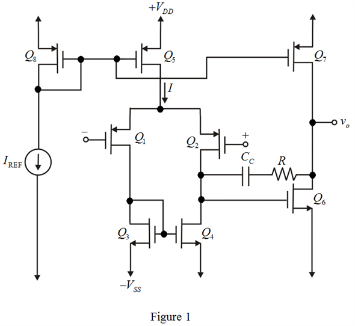
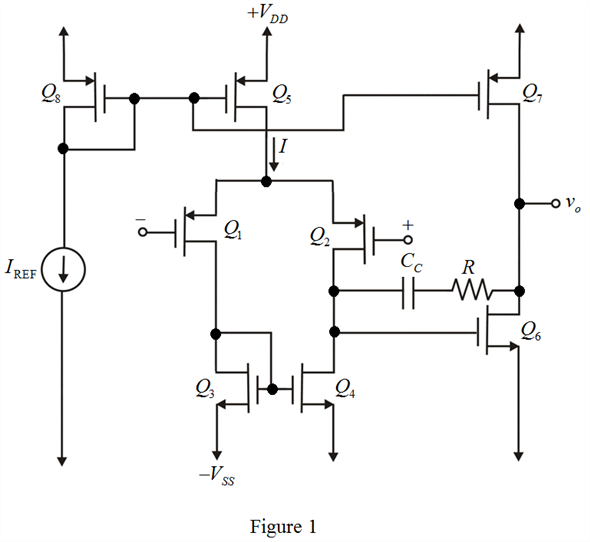

Refer to Figure 12.1 for a basic two-stage CMOS operational amplifier configuration in the text book.
The CMOS op-amp topology with a resistance  included in series with
included in series with  is shown in Figure 1.
is shown in Figure 1.

Refer to Figure 12.1 for a basic two-stage CMOS operational amplifier configuration in the text book.
The CMOS op-amp topology with a resistance included in series with is shown in Figure 1.

Determine the value of frequency located at pole for which a phase margin of .
.

Substitute  for and for
for and for  in the equation.
in the equation.
Determine the value of output resistance of the second stage.
Substitute for  and for in the equation.
and for in the equation.
Determine the transconductance of the transistor.
Substitute  for
for  in the equation.
in the equation.
Thus, the value of transconductance, is.
Determine the value of resistance connected in series with the frequency compensation capacitor.
Substitute for in the equation.
Thus, the value of resistance connected in series with the frequency compensation capacitor,  is.
is.
Substitute  for
for  and for
and for  in the equation.
in the equation.
Thus, the value of slew rate for the two stage CMOS operational amplifier,  is.
is.
Determine the value of frequency compensation capacitance for the two stage CMOS operational amplifier.
Substitute  for
for  and for in the equation.
and for in the equation.
Thus, the value of frequency compensation capacitance for the two stage CMOS operational amplifier, is.